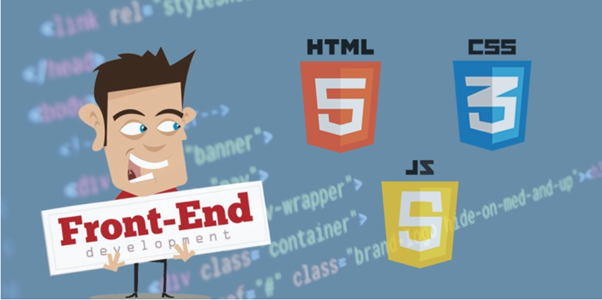
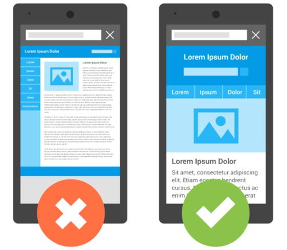
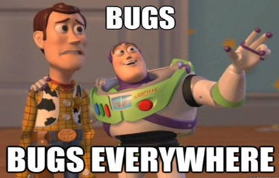

Front end developer is one of the most lucrative careers in 2020. The reason being it's high demand and the promising high salaries offered by big and small tech MNCs. Before telling the skills needed to become a front end developer, let’s get to know what exactly is a front end developer. Front end developer is a software developer who works at the client-side or the UI and is responsible for computer programming in HTML, CSS, and JavaScript which creates the visual user side elements of a website, software, or application. It makes the website appealing, user-friendly and engaging.
Responsibilities of a Front end developer
Image by Spigot.
“If you're already a front-end developer, well, pretend you're also wearing a pirate hat.” ― Ethan Marcotte, Responsive Web Design- Developing new, efficient and responsive UI for an enriching user experience.
- Ensuring the technical feasibility of web page UI/UX designs.
- Optimize the web document to increase speed and scalability.
- Doing computer programming to build reusable code and libraries to use for different HTML pages.
- Recognizing the validations to be implemented based on user input and clearly conveying it to the back-end.
Here are top 9 skills that you need to become a front end developer in 2020
1. HTML
Hypertext Markup language, abbreviated as HTML, is the standard markup language used to create and design documents that are displayed in a web browser. It is the most used programming language by front end developers. The latest version of HTML is HTML5.
2. CSS
The second skill you need to become a front end developer is CSS, Cascading style sheets is a style sheet language used in formatting the layout of webpages.
3. JavaScript
JavaScript is a well-interpreted, just-in-time compiled, dynamic and prototype-based language and it is the most popular programming language for web browsers used by most frontend developers.

Image by Seguetech.
The strength of JavaScript is that you can do anything. The weakness is that you will.4. Responsive design
Responsive web design is an essential skill for an eminent front end developer as it makes the web browser look appealing, easy to use and attractive in any device, whether it be desktop, tablet or phone.
Image by WEBFX.
Intuitive design is how web superpowers.5. Frameworks
Some of widely used frameworks are Angular.JS, Express.JS, React.JS, Django and Vue.JS. You can pick one or two frameworks to develop your web browser.
6. Create a UI prototype and make functional designs
UI prototype is an iterative web development technique in which the clients are actively engaged in the mocking up of a front end system.
7. Good communication and soft skills
You cannot deny the fact that effective communication and soft skills have a huge impact on the career you are pursuing and also on the technical aspect of your job. It not only boosts your confidence and helps in building long-term relationships but is also very useful for a clear and concise understanding of the requirements of the client thus helping us deliver optimized and user friendly solutions.
8. Testing Skills
From a website for your mom’s bakery business to an international website for e-commerce, bugs are a reality of web development.
Image by Medium.
“Good programmers write code for humans first and computers next.”There is a platform where you can actually learn above skills very fast and have an awesome first hand experience of coding, which is CoEdify, where you can Edify your career and transform your front end development journey to another level. You can visit the website, CoEdify
9. Be Creative
This one skill will always pay you off, but if you are already extremely creative, then the front-end development career is for you!!
So, these are the top 9 skills needed to become a front-end developer in 2020